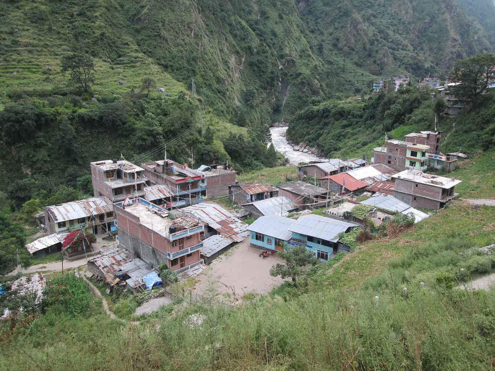
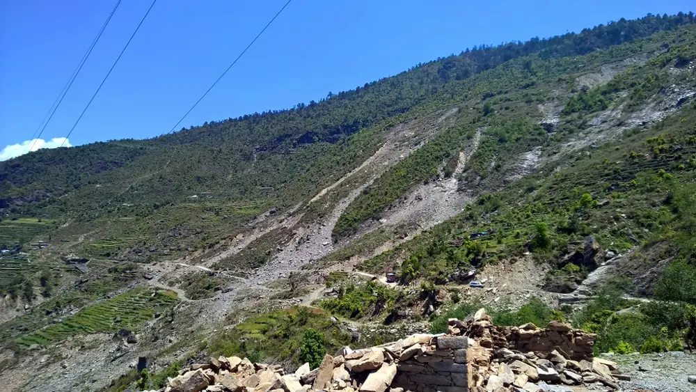

Rasuwa, Nepal · 26 August 2026, 08:37
The warning came 38 minutes after the mountain fell.
A rock-ice slab broke from Langtang Lirung and became a debris flood down the Bhote Koshi and Trishuli. By the time the first SMS arrived, the flood had passed the first villages and the hydropower tunnels. This page works out what could be agreed and funded before the next one.
A fictional protocol for a real problem: real data, real law, invented commitments.
The protocol in one minute ↓The protocol in one minute
A forecast can get people ready. Only sensors upstream can warn of a collapse.
The four steps at a glance
What this protocol cannot do
Reading paths: the event · how it works · does it work? · cost · decisions · all detail
1 · The day
No sensor sat where the flood began.
Replay the flood front as river gauges, cameras and reports recorded it. Then switch on detection at the source.

2 · The hazard
Three ways a valley floods in minutes. Only one gives days.
Where people live in the flood path
Seven river valleys lie below known glacial lakes or collapse sources. These are the people living less than 25 m above the river .
Lakes with the most people below them
3 · The protocol
Four steps, each released only when its warning time allows.
Weeks, days, hours or minutes. Each step names who decides and who pays. Only step 3 draws on the Red Cross emergency fund.
4 · Does it work?
A forecast gets people ready. It rarely says where the flood will hit.
In Rasuwa, the rain alert missed every fatal flood day.
A second signal halves evacuation requests.
ECMWF forecasts are better than the ones we tested.
5 · Minutes upstream
Where the sensor sits decides who gets a warning.
Other corridors and flood speeds
The alarm chain belongs to government. Today most of it is missing.
6 · What people get
Who is warned, who is paid, and who is not on any list.
What the Red Cross itself does
Who is registered for cash
- Where: households less than 25 m above a corridor river, within 3 km of it.
- From which list: the government's social-security registers, checked with each municipality.
- Who first: landless and riverside households, women-headed households, older people and persons with disabilities. Ethnicity is not a criterion.
- Not on household lists: hydropower and road workers, traders and trekkers, reached through operators and associations.

7 · What it costs
What the fund pays for, and what it does not.
8 · Decisions
Six choices the protocol cannot make alone.
Pick an option for each. The numbers on the right, and in the bar at the top, follow your choices.
Appendix
All the detail.
Documented events, 1963–2026
Potentially dangerous glacial lakes (ICIMOD 2020)
People living less than 25 m above the river in the first 120 km downstream. Codes give the lake's position (longitude, latitude).
Corridor exposure
Priority impacts
Impact records by month and terrain (BIPAD, 2011–2025)
Strict, generous and out-of-sample scores
Trigger workbench
Every setting of the rain test (GEFS forecasts or ERA5-Land observations, 2011–2019), scored generously: an alert during the event counts.
How we tested
All actions by warning time
Cash design and delivery
People in the flood path by municipality
Preparation and stock
Exact trigger statements and stop rules
Who can order what
Nepal's Disaster Risk Reduction and Management Act 2074 and Rules 2076, read in an unofficial English translation. Items marked "check" need the Nepali text.
Activation clock
Dammed-lake procedure
Alert messages (proposed, for native-speaker review)
Who does what, by district
Timeline of 26 August 2026
The toll, and why figures differ
Every mapped place and its warning time
Follows the sensor and delays set in chapter 5. Places at the same distance are grouped.
Hydropower sites
Who owns each part of the alarm chain
Budget lines
Learning from every activation
National Society capacity (to be completed by the National Society)
Endorsement sequence
Risks and mitigation
What is real, what is invented
Data
All figures are rebuilt from public data by a scripted pipeline.